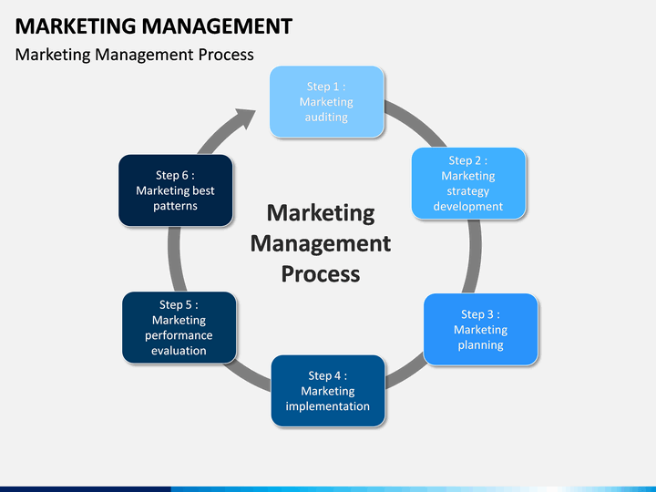

This course is a 400 level class taught by Brandon McAlexander. For this class the text book is optional and the examinations are based solely on what is covered in the lectures. The course ranges and covers differing management styles, different concepts involving motivation of both employees and consumers alike. It also will be covering a range of topics such as, market analysis, distribution and supply chain management, customer aquisition strategies, and pricing to name a few.

During the extent of this course we will also learn to investigate and analyze markets and develop a marketing strategy accordingly. This semester it is expected that we will improve in our ability to identify marketing issues, as well as opportunities for companies. We are also expected to improve our skills finding creative solutions to different marketing challenges and be able to think in a strategic way.
